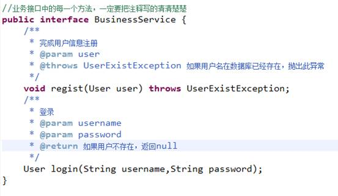

注意：此种模型只适合开发非常简单的小应用。不用
M：Model模型 JavaBean
V：View视图 JSP
C：Controller 流程控制器 Servlet
开发顺序：
分包存放：
com.itheima.项目名称.模块名称.domain: 存放JavaBean
com.itheima.项目名称.模块名称.service: 存放业务接口
com.itheima.项目名称.模块名称.service.impl:存放业务接口实现
com.itheima.项目名称.模块名称.dao:存放DAO接口
com.itheima.项目名称.模块名称.dao.impl:存放DAO实现
----------------------------------------------------
com.itheima.项目名称.模块名称.web.controller:存放控制器Servlet
com.itheima.项目名称.模块名称.web.bean:表现层用到的一些临时bean
JSP:WEB-INF/pages 防止用户直接访问JSP（不是必须的）
com.itheima.项目名称.模块名称.util:存放一些工具
com.itheima.项目名称.模块名称.test:存放单元测试
数据库：采用XML。JSP中不能有一行Java脚本或表达式.MVC+三层架构
拷贝jar包：
DOM4J：
dom4j.jar
jaxen.jar(xpath支持)
JUNIT4：
junit.jar
JSTL:
jstl.jar
standard.jar
Beanutil:
commons-beanutil.jar
commons-logging.jar
第一步
JavaBean：
XML：
第二步：
Service接口：

第三步：